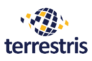

class: center, middle # Der schwere Werdegang zu einem <br>*erfolgreichem* <br>FOSSGIS-Projekt .center[Till Adams & Oliver Tonnhofer] --- # Agenda 1. Wer sind wir? 2. Was ist Erfolg 3. Wege zum Erfolg 4. Fazit --- # Till Adams .center[] * terrestris GmbH & Co. KG, Bonn * --- # Oliver Tonnhofer .center[] * Omniscale GmbH & Co. KG, Oldenburg * Open Source Entwicklung (Client/Server) * OpenStreetMap Kartendienste * MapProxy und Imposm Entwicklung und Support --- # Was ist Erfolg? - Erfolg für die Autoren? - Erfolg für die Nutzer? ??? olt: Wir müssen den Erfolg von zwei Seiten betrachten,: Autor und Nutzer Nutzer hat Interesse an Community, guter Dokumentation, Weiterentwicklung, etc. --- # Erfolg für die Autoren von Open Source - Eigene Ziele werden erreicht! -- ### Welche Ziele? .center[*Motivation ein OS Projekt zu starten*] - Philanthropisch - Wirtschaftlich - Praktisch ??? olt: Ein Versuch Erfolg/Vorteil/Motivation von OS zu kategorisieren. --- # Philanthropisch - Geben und Nehmen - Unterstützung der Open Source Philosophie - Nutzen und eigene Software zurückgeben oder verbessern - "Ich tu anderen Gutes" - Unterstütze Nutzer mit dem gleichen Problem - Gemeinnützige Projekte (z.B. HOT) --- # Wirtschaftlich - Support & Wartung - Weiterentwicklung - Marketing - Open Source als Buzzword - "Ach ja, Firma X ist doch die vom Projekt A" --- # Praktisch - *"Scratch your own itch"* - Software aus eigenen Bedürfnissen entwickeln - *"A thousand eyes make all bugs shallow."* – Linus Torvalds - Mehr Nutzer, mehr Fehlermeldungen - Im Optimalfall mehr Fixes --- # Erfolg für die Nutzer von Open Source - Anwendung löst meine Probleme! - Zu angemessenen "Kosten" (Zeit/Geld) - Schulungsaufwand: Dokumentation, Workshops, Trial&Error - Entwicklung von fehlenden Funktionen - Laufende Kosten (Lizenzkosten, Wartung, etc.) - Nachhaltig - Aktive Weiterentwicklung - "breite" Nutzerbasis -- <br> .center[**Open Source ist Vertrauen.**] ??? es geht etwas darum, was ich oft erzähle: Wann kann man auf ein open SOurce Projekt als Kernkomponente Vettrauen? wie vermeide ich mich alleine auf einen (Glasbaustein-Brille tragenden) Entwickler zu verlassen? --- class: middle # Beispiel Projekte ??? olt: Evtl. macht es Sinn, ein paar Beispielprojekt vorzustellen und dann Probleme/Chancen/Möglichkeiten aufzuführen und hier wieder auf die Projekte zu verweisen. --- # Beispiele Imposm Tool mit sehr abgeschlossenem Funktionsumfang.<br> Importiert OSM Daten nach PostGIS. Zielgruppe: - Power-User Initiale Motivation: - *"Scratch your own itch"* - *"A thousand eyes make all bugs shallow."* - Geben und Nehmen - Marketing --- # Beispiele SHOGun Bibliothek mit sehr offenen Funktionsumfang. Zielgruppe: - Entwickler - Kunden aus großen Organisationen Initiale Motivation: - *"Scratch your own itch"* - Softwarekern entwickeln, der es erlaubt zukünftige Projekte zu vereinfachen - Entwicklung einer steuernden Middleware für Anwendungen --- # Beispiele MapProxy Tool mit offenem Funktionsumfang. Zielgruppe: - Nutzer die auch WMS Dienste aufsetzen würden, keine Entwickler Initiale Motivation: - Geben und Nehmen - Weiterentwicklung - Support & Wartung --- # Wege zum Erfolg ## Was gehört zu einem erfolgreichen OS Projekt - Entwicklung - Support - Marketing - Dokumentation - Release-Management - Qualitätssicherung - Community ??? till: Gemeinsam Vorstellung, warum es "schwer" ist, mit gutem Code auch ein gutes OS Prijekt zu machen, speziell aus Sicht kleinerer Firmen (Projekte, Hektik, etc.pp.) --- # Entwicklung - Initiale Entwicklung - Weiterentwicklung - Große Features - "Version 2.0" - externe Code-Beiträge ??? Weiterentwicklung am einfachsten von allen Punkten, insb. wenn Feature vom Aufwand überschaubar ist und einen konkreten Nutzen für den Kunden/Sponsor hat. --- # Beispiel MapProxy ### Große Features - Absicherung/Security-API - Entwicklung in Etappen 1. Absicherung von Diensten 2. Absicherung von Layern 3. Absicherung für geografische Bereiche *(clipping)* 4. Clipping von Kacheln - WFS Unterstützung - Oft angefragt - Hoher initialer Entwicklungsaufwand - Bisher keine Mittel dies umzusetzen --- # Beispiel SHOGun - Planung SHOGun II seit Oktober 2013. - Seitdem wurde in mehreren Projekten aus Zeit/Geldmangel doch auf eine Version 1.x gesetzt. .center[*Firma ist wie ein Flugzeug, das im Flug schlecht anhalten kann:<br> Gehälter, Kundenwünsche, etc.*] --- # Support - Mailinglisten - Kommerzieller Support - Schulung und Workshops - Support-/Wartungsverträge - Wartung/Betriebssicherheit ??? Aufwand nicht zu unterschätzen. Power-User können hier am einfachsten etwas zurückgeben. kommerziell: Gute Querfinanzierungsmöglichkeit für die Entwicklung allerdings, mit nur 1-2 stunden hilfe kommt man nicht weit. langfristige supportverträge notwendig Wartungsgelder erlauben es, die Software "ungerichtet" weiter zu entwickeln. --- # Problem Support - Unterstützung einkaufen *"wenn es brennt"* - *"Pay as you go"* - Reaktionszeit? - Support-/Wartungsvertrag - Betriebssicherheit - Kontinuierliche Einnahmen erlauben es, die Software "ungerichtet" weiterzuentwickeln. --- # Marketing - Website - Twitter - Vorträge - Flyer - OSGeo Live ??? Zahlt keiner, ist aber notwendig um neue Nutzer und langfristig weitere Entwicklung und Sponsoren zu finden. --- # Dokumentation - Installation - Konfiguration - Tutorials - FAQ ??? Für konfiguration/api dokumentation besteht ein eigener anreiz: "wie benutze ich das nochmal?" Dokumentation für Kollegen. Einstiegdokumentation hat geringen eigennutzen, aber gut für neue Nutzer (sprich Marketing) Problem: Zahlt keiner diese zu verbessern. Bei jeder Entwicklung muss die aktualisierung/erweiterung der Doku mit eingeplant werden. Problem: Dokumentation darf nicht zu speziell sein und muss aktuell gehalten werden. Problem: Oft Mehrsprachigkeit gewünscht --- # Release-Management - Pakete aktualisieren und hochladen - Release notes - Announcement: Mailinglist, Blog, Twitter - Vorversionen: Alpha/Beta/RC ??? Regelmäßige Releases zeigen Projektaktivität --- # Qualitätssicherung - Automatisierte Tests - Feedback/Fehlermeldungen analysieren - Konfigurations-, Dokumentations- oder Benutzerfehler? - Oder Fehler im Programm? ??? zahlt auch keiner --- # Problem: "Code über den Zaun werfen" .center[Ein kleines Feature kann schnell mal in 2-3 Stunden umgesetzt werden.] Nur: - wer schreibt aktualisiert Dokumentation? - wer schreibt Tests? - wer stellt sicher, dass das Feature nicht Einfluss auf bestehende Funktion hat? - wer beantwortet Fragen zu dem Feature auf dem Mailingliste? - wer fixt zukünftige Bugs in dem Feature? - … --- # Community - Erfahrungsaustausch - Gemeinsame Arbeit/Finanzierung von - Weiterentwicklungen - Dokumentation - Entwicklercommunity - kein "Single Point of Failure" --- # Fazit - Softwareentwicklung ist nur ein kleiner Teil. - Nur die Weiterentwicklung finanziert kein OS Projekt. - Projekte müssen wachsen um Aufgaben auf viele Schultern zu verteilen: - Autoren müssen langfristig Zeit/Geld in das OS Projekt investieren - erst ein erfolgreiches Projekt kann zum wirtschaftlichen Erfolg führen ??? --- # Wie kann ich helfen? Als Nutzer: - Feedback geben und Fehler bericht(ig)en - Andern helfen (z.B. auf Mailinglisten antworten) - Dokumentation schreiben & übersetzen - Werbung machen! - mehr Nutzer, mehr aktive Nutzer, mehr Entwickler, mehr Sponsoren, ... Als Auftraggeber/Sponsor: - Langfristige Projektziele unterstützen - Qualität fordern und finanzieren ??? --- class: middle # Vielen Dank! .center[Fragen, Anmerkungen Diskussion?!]